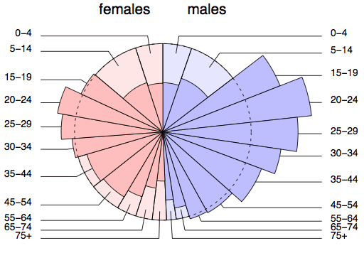

Other types of diagram
We have only described a few general-purpose graphical methods for describing data. In general, publications that are intended for a wide readership should avoid more complex graphics, but other ways to present data graphically are useful for some data sets.
Always use the simplest graphical method that will convey the information that you want.
Road accidents in Israel
The diagram below is called a spie chart and is based on a circle that shows a standard pie chart of the age and sex distribution in Israel.

The darker segments describe the ages of all road accident casualties in Israel in 2002; they use the same slices as for the overall population distribution with their radius adjusted to make the areas of the slices in proportion to the number of casualties in that age group and gender.
The 'bulges' show age groups where there are a disproportionate number of casualties.
Take care with interpretation of the graph. The bulge in male casualties aged 15-54 could be caused by more reckless drivers of this age, but they probably also spend more time driving.